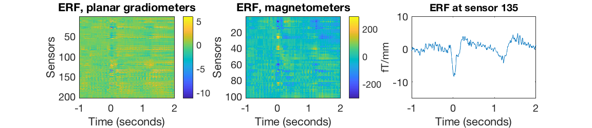
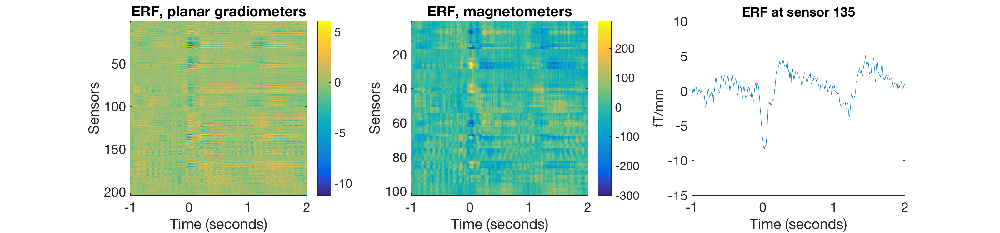

Preproc - OPT
This is an example for running the OHBA recommended preprocessing pipeline on Elekta-Neuromag data (a very similar pipeline will work on CTF data as well) using OPT (OSL's preproscessing tool). It works through basically the same steps as you would for the manual preprocessing, but this time it is all automated.
Contents
This practical is also available as a template script in your osl example folder. For today's workshop we will copy and paste directly from the osl website. We will work with a single subject's data from a button press experiment. The data should be available in your installation already. Note that this contains the fif file: fifs/loc_S02_sss1.fif, which has already been SSS Maxfiltered and downsampled to 250 Hz, and which we will used for this analysis.
SPECIFY DIRECTORIES FOR THIS ANALYSIS
Set the data directory where the data is, this should be the correct path already:
datadir = fullfile(osldir,'example_data','preproc_example','automatic_opt')
datadir =
'/Users/romesh/oxford_postdoc/toolboxes/osl/example_data/preproc_example/automatic_opt'
SET UP THE LIST OF SUBJECTS
Specify a list of the existing raw fif files for subjects for input into Maxfilter. Note that here we only have 1 subject, but more generally there would be more than one, e.g.: raw_files{1}=[testdir '/fifs/sub1_face_sss']; raw_files{2}=[testdir '/fifs/sub2_face_sss']; etc... OR Specify a list of the input files to be converted into SPM files (which will be created as output). It is important to make sure that the order of these lists is consistent across sessions.
clear raw_fif_files input_files spm_files structural_files; raw_fif_files{1}=fullfile(datadir,'fifs','loc_S02.fif'); input_files{1}=fullfile(datadir,'fifs','loc_S02_sss1.fif'); spm_files{1}=fullfile(datadir,'spm_files','loc_S02');
SET UP STRUCTURALS
Setup a list of existing structural files, in the same order as spm_files and fif_files: Note that here we only have 1 subject, but more generally there would be more than one. Here we do not use them, but for any source-reconstruction following OPT you would need them.
structural_files{1}=fullfile(datadir,'structs','anat.nii'); % leave empty if no structural available
SETTING UP AN OPT ANALYSIS
This sets up an OPT struct to pass to osl_check_opt, by setting the appropriate fields and values in the OPT struct. Note that some fields are mandatory while others are optional (and will be automatically set to their default values). The osl_check_opt.m function should be used to setup the settings for OPT. This function will check the settings, and will throw an error if any required inputs are missing, and will fill other settings that are not passed in with their default values. The OPT structure can then be passed to osl_run_opt to do an OPT analysis. On the Matlab command line type "help osl_check_opt" to see what the mandatory fields are. Note that you MUST specify:
opt.raw_fif_files: A list of the existing raw fif files for subjects (need these if you want to do SSS Maxfiltering) OR
opt.input_files: A list of the base input (e.g. fif) files for input into the SPM convert call
In either case you need:
opt.datatype: Specifies the datatype; i.e. 'neuromag', 'ctf', 'eeg';
For more information, see
https://sites.google.com/site/ohbaosl/preprocessing/opt-under-construction
Specify required inputs
List of input files and data type: In our case the input files were already setup above in the variable input_files, and we are using data acquired by the Elekta Neuromag system (same type as in manual preproc practical).
opt=[];
opt.input_files=input_files;
opt.datatype='neuromag';
Specify optional inputs
This has to be the name of the directory (full path) where the OPT will be stored, and is given a ".opt" extension. Note that each OPT directory is associated with an OPT run - if you rerun OPT with the same opt.dirname then this will overwrite an old directory, and the old OPT results will be lost. Hence, you should ensure that you change opt.dirname for a new analysis, if you want to avoid overwriting an old one!
opt.dirname=fullfile(datadir,'practical_singlesubject.opt');
Maxfilter settings: Here we are going to skip the double maxfilter call as this has been run already for us
opt.maxfilter.do=0;
HIGHPASS AND NOTCH FILTERING
Here, we set both the highpass filter and the notch filter to attenuate slow drifts and 50 Hz line noise. This corresponds to our filtering part during the manual preprocessing; now OPT takes care of it.
opt.highpass.do=1;
% Notch filter settings
opt.mains.do=1;
DOWNSAMPLING
This is the part to modify to enable downsampling with the respective sampling frequency desired. Now we downsampel to 150Hz.
opt.downsample.do=1; opt.downsample.freq=150;
IDENTIFYING BAD SEGMENTS
This identifies bad segments in the continuous data (similar to using oslview in the manual practical, just automated). This might be particularly important if you want to do an automated AFRICA denoising as part of OPT afterwards, so we recommend this to be set to 1.
opt.bad_segments.do=1;
AFRICA DENOISING
In this tutorial, we will not use AFRICA as part of the automatic preprocessing: If you want to play around with it at a later stage, set .do to 1 and run everything again. Again, make sure to set opt.dirname to something different than before to not overwrite your non-AFRICA results.
opt.africa.do=1;
opt.africa.ident.artefact_chans = {'ECG','EOG'};
opt.africa.ident.mains_kurt_thresh = 0.5;
opt.africa.ident.do_kurt = true;
opt.africa.ident.do_plots = true;
opt.africa.ident.do_mains = true;
EPOCHING DATA
Here the epochs are set to be from -1s to +2s relative to the stimulus onset in the MEG data.
opt.epoch.do=1; opt.epoch.time_range = [-1 2]; % epoch end in secs opt.epoch.trialdef(1).conditionlabel = 'StimLRespL'; opt.epoch.trialdef(1).eventtype = 'STI101_down'; opt.epoch.trialdef(1).eventvalue = 11; opt.epoch.trialdef(2).conditionlabel = 'StimLRespR'; opt.epoch.trialdef(2).eventtype = 'STI101_down'; opt.epoch.trialdef(2).eventvalue = 16; opt.epoch.trialdef(3).conditionlabel = 'StimRRespL'; opt.epoch.trialdef(3).eventtype = 'STI101_down'; opt.epoch.trialdef(3).eventvalue = 21; opt.epoch.trialdef(4).conditionlabel = 'StimRRespR'; opt.epoch.trialdef(4).eventtype = 'STI101_down'; opt.epoch.trialdef(4).eventvalue = 26; opt.epoch.trialdef(5).conditionlabel = 'RespLRespL'; %L but opt.epoch.trialdef(5).eventtype = 'STI101_down'; opt.epoch.trialdef(5).eventvalue = 13; opt.epoch.trialdef(6).conditionlabel = 'RespLRespR'; opt.epoch.trialdef(6).eventtype = 'STI101_down'; opt.epoch.trialdef(6).eventvalue = 19; opt.epoch.trialdef(7).conditionlabel = 'RespRRespL'; % L but press opt.epoch.trialdef(7).eventtype = 'STI101_down'; opt.epoch.trialdef(7).eventvalue = 23; opt.epoch.trialdef(8).conditionlabel = 'RespRRespR'; opt.epoch.trialdef(8).eventtype = 'STI101_down'; opt.epoch.trialdef(8).eventvalue = 29;
Instead of identifying bad segments in the continuous data, we will rely on opt to identify bad trials in the epoched data using the opt.outliers settings. This is roughly equivalent to using osl_reject_visual during the manual procedure.
opt.outliers.do=1;
Coregistration settings: We're not doing coregistration here, but normally you would if you want to do subsequent analyses in source space. This requires structural scans.
opt.coreg.do=0;
CHECK OPT SETTINGS
Checking chosen settings: By calling osl_check_opt we will check the validity of the OPT parameters we have specified. Then, OPT will fill in any missing parameters with their default values for us.
opt=osl_check_opt(opt);
Using opt.input_files as input
LOOK AT OPT SETTINGS AND SUBSETTINGS
DISPLAY OPT SETTINGS
This gives an overview of the set parameters
disp('opt settings:');
disp(opt);
opt settings:
datatype: 'neuromag'
raw_fif_files: []
input_files: {'/Users/romesh/oxford_postdoc/toolboxes/osl/example_data/preproc_example/automatic_opt/fifs/loc_S02_sss1.fif'}
spm_files: []
input_file_type: 'input_files'
sessions_to_do: 1
dirname: '/Users/romesh/oxford_postdoc/toolboxes/osl/example_data/preproc_example/automatic_opt/practical_singlesubject.opt'
modalities: {2×1 cell}
cleanup_files: 1
convert: [1×1 struct]
maxfilter: [1×1 struct]
downsample: [1×1 struct]
highpass: [1×1 struct]
mains: [1×1 struct]
bad_segments: [1×1 struct]
africa: [1×1 struct]
epoch: [1×1 struct]
outliers: [1×1 struct]
coreg: [1×1 struct]
osl2_version: '8ed1771'
LOOK AT OPT SUB-SETTINGS
The OPT structure contains a number of subfields containing the settings for the relevant stages of the pipeline. Note that each of these has a "do" flag (e.g. opt.downsample.do), which indicates whether that part of the pipeline should be run or not.
disp('opt.maxfilter settings:');
disp(opt.maxfilter);
opt.maxfilter settings:
remote_port: 0
do: 0
do_sss: 1
do_remove_badchans_pre_sss: 1
max_badchans_pre_sss: 10
movement_compensation: 1
trans_ref_file: []
temporal_extension: 0
maxfilt_dir: '/neuro/bin/util'
bad_epochs: {[]}
cal_file: 0
ctc_file: 0
disp('opt.downsample settings:');
disp(opt.downsample);
opt.downsample settings:
do: 1
freq: 150
disp('opt.africa settings:');
disp(opt.africa);
opt.africa settings:
todo: [1×1 struct]
precompute_topos: 1
used_maxfilter: 1
ident: [1×1 struct]
disp('opt.highpass settings:');
disp(opt.highpass);
opt.highpass settings:
do: 1
cutoff: 0.1000
disp('opt.epoch settings:');
disp(opt.epoch);
opt.epoch settings:
do: 1
time_range: [-1 2]
timing_delay: 0
trialdef: [1×8 struct]
disp('opt.outliers settings:');
disp(opt.outliers);
opt.outliers settings:
do: 1
outlier_measure_fns: {'min' 'std'}
event_significance: 0.0500
channel_significance: 0.0500
disp('opt.coreg settings:');
disp(opt.coreg);
opt.coreg settings:
do: 0
useheadshape: 1
mri: {''}
use_rhino: 1
forward_meg: 'Single Shell'
fid_label: [1×1 struct]
RUNNING THE OPT ANALYSIS
This will run the main OPT analysis:
opt=osl_run_opt(opt);
Using opt.input_files as input
%%%%%%%%%%%%%%%%%%%%%%%%%%%%%%%%%%%%%%%%%%%%%%%%%%%%%%%%%%%%%%%%%%%%%%%%%%%%%%%%%%%%%%%%%%%%%%
%%%%%%%%%%%%%%%%%%%%%%% STARTING LOOP OVER SESSIONS %%%%%%%%%%%%%%%%%%%%%%%%%%%%%%%%%%%%%%%
%%%%%%%%%%%%%%%%%%%%%%%%%%%%%%%%%%%%%%%%%%%%%%%%%%%%%%%%%%%%%%%%%%%%%%%%%%%%%%%%%%%%%%%%%%%%%%
%%%%%%%%%%%%%%%%%%%%%%% RUNNING OPT ON SESS = 1 %%%%%%%%%%%%%%%%%%%%%%%
%%%%%%%%%%%%%%%%%%%%%%% Input file: /Users/romesh/oxford_postdoc/toolboxes/osl/example_data/preproc_example/automatic_opt/fifs/loc_S02_sss1.fif %%%%%%%%%%%%%%%%%%%%%%%
%%%%%%%%%%%%%%%%%%%%%%% CONVERT INPUT DATA, SESS = 1 %%%%%%%%%%%%%%%%%%%%%%%
SPM12: spm_eeg_convert_4osl (v6190) 15:57:51 - 21/11/2017
========================================================================
SPM12: spm_eeg_convert_4osl (v6190) 15:57:51 - 21/11/2017
========================================================================
306 MEG channel locations transformed
Reading /Users/romesh/oxford_postdoc/toolboxes/osl/example_data/preproc_example/automatic_opt/fifs/loc_S02_sss1.fif ...
Opening raw data file /Users/romesh/oxford_postdoc/toolboxes/osl/example_data/preproc_example/automatic_opt/fifs/loc_S02_sss1.fif...
Range : 73000 ... 457999 = 73.000 ... 457.999 secs
Ready.
306 MEG channel locations transformed
Reading /Users/romesh/oxford_postdoc/toolboxes/osl/example_data/preproc_example/automatic_opt/fifs/loc_S02_sss1.fif ...
Opening raw data file /Users/romesh/oxford_postdoc/toolboxes/osl/example_data/preproc_example/automatic_opt/fifs/loc_S02_sss1.fif...
Range : 73000 ... 457999 = 73.000 ... 457.999 secs
Ready.
Reading 73000 ... 457999 = 73.000 ... 457.999 secs... [done]
306 MEG channel locations transformed
Reading /Users/romesh/oxford_postdoc/toolboxes/osl/example_data/preproc_example/automatic_opt/fifs/loc_S02_sss1.fif ...
Opening raw data file /Users/romesh/oxford_postdoc/toolboxes/osl/example_data/preproc_example/automatic_opt/fifs/loc_S02_sss1.fif...
Range : 73000 ... 457999 = 73.000 ... 457.999 secs
Ready.
306 MEG channel locations transformed
Reading /Users/romesh/oxford_postdoc/toolboxes/osl/example_data/preproc_example/automatic_opt/fifs/loc_S02_sss1.fif ...
Opening raw data file /Users/romesh/oxford_postdoc/toolboxes/osl/example_data/preproc_example/automatic_opt/fifs/loc_S02_sss1.fif...
Range : 73000 ... 457999 = 73.000 ... 457.999 secs
Ready.
Data type is missing or incorrect, assigning default.
creating layout from cfg.grad
creating layout for neuromag306 system
Reading 73000 ... 82722 = 73.000 ... 82.722 secs... [done]
Reading 82723 ... 92445 = 82.723 ... 92.445 secs... [done]
Reading 92446 ... 102168 = 92.446 ... 102.168 secs... [done]
Reading 102169 ... 111891 = 102.169 ... 111.891 secs... [done]
Reading 111892 ... 121614 = 111.892 ... 121.614 secs... [done]
Reading 121615 ... 131337 = 121.615 ... 131.337 secs... [done]
Reading 131338 ... 141060 = 131.338 ... 141.060 secs... [done]
Reading 141061 ... 150783 = 141.061 ... 150.783 secs... [done]
Reading 150784 ... 160506 = 150.784 ... 160.506 secs... [done]
Reading 160507 ... 170229 = 160.507 ... 170.229 secs... [done]
Reading 170230 ... 179952 = 170.230 ... 179.952 secs... [done]
Reading 179953 ... 189675 = 179.953 ... 189.675 secs... [done]
Reading 189676 ... 199398 = 189.676 ... 199.398 secs... [done]
Reading 199399 ... 209121 = 199.399 ... 209.121 secs... [done]
Reading 209122 ... 218844 = 209.122 ... 218.844 secs... [done]
Reading 218845 ... 228567 = 218.845 ... 228.567 secs... [done]
Reading 228568 ... 238290 = 228.568 ... 238.290 secs... [done]
Reading 238291 ... 248013 = 238.291 ... 248.013 secs... [done]
Reading 248014 ... 257736 = 248.014 ... 257.736 secs... [done]
Reading 257737 ... 267459 = 257.737 ... 267.459 secs... [done]
Reading 267460 ... 277182 = 267.460 ... 277.182 secs... [done]
Reading 277183 ... 286905 = 277.183 ... 286.905 secs... [done]
Reading 286906 ... 296628 = 286.906 ... 296.628 secs... [done]
Reading 296629 ... 306351 = 296.629 ... 306.351 secs... [done]
Reading 306352 ... 316074 = 306.352 ... 316.074 secs... [done]
Reading 316075 ... 325797 = 316.075 ... 325.797 secs... [done]
Reading 325798 ... 335520 = 325.798 ... 335.520 secs... [done]
Reading 335521 ... 345243 = 335.521 ... 345.243 secs... [done]
Reading 345244 ... 354966 = 345.244 ... 354.966 secs... [done]
Reading 354967 ... 364689 = 354.967 ... 364.689 secs... [done]
Reading 364690 ... 374412 = 364.690 ... 374.412 secs... [done]
Reading 374413 ... 384135 = 374.413 ... 384.135 secs... [done]
Reading 384136 ... 393858 = 384.136 ... 393.858 secs... [done]
Reading 393859 ... 403581 = 393.859 ... 403.581 secs... [done]
Reading 403582 ... 413304 = 403.582 ... 413.304 secs... [done]
Reading 413305 ... 423027 = 413.305 ... 423.027 secs... [done]
Reading 423028 ... 432750 = 423.028 ... 432.750 secs... [done]
Reading 432751 ... 442473 = 432.751 ... 442.473 secs... [done]
Reading 442474 ... 452196 = 442.474 ... 452.196 secs... [done]
Reading 452197 ... 457999 = 452.197 ... 457.999 secs... [done]
306 MEG channel locations transformed
Reading /Users/romesh/oxford_postdoc/toolboxes/osl/example_data/preproc_example/automatic_opt/fifs/loc_S02_sss1.fif ...
Opening raw data file /Users/romesh/oxford_postdoc/toolboxes/osl/example_data/preproc_example/automatic_opt/fifs/loc_S02_sss1.fif...
Range : 73000 ... 457999 = 73.000 ... 457.999 secs
Ready.
306 MEG channel locations transformed
Reading /Users/romesh/oxford_postdoc/toolboxes/osl/example_data/preproc_example/automatic_opt/fifs/loc_S02_sss1.fif ...
Opening raw data file /Users/romesh/oxford_postdoc/toolboxes/osl/example_data/preproc_example/automatic_opt/fifs/loc_S02_sss1.fif...
Range : 73000 ... 457999 = 73.000 ... 457.999 secs
Ready.
Data type is missing or incorrect, assigning default.
creating layout from cfg.grad
creating layout for neuromag306 system
Found 965 events
%%%%%%%%%%%%%%%%%%%%%%% DOWNSAMP, SESS = 1 %%%%%%%%%%%%%%%%%%%%%%%
SPM12: spm_eeg_downsample (v6614) 15:58:12 - 21/11/2017
========================================================================
Resampling frequency is 150Hz
%%%%%%%%%%%%%%%%%%%%%%% HP FILT, SESS = 1 %%%%%%%%%%%%%%%%%%%%%%%
SPM12: spm_eeg_filter (v5876) 15:58:19 - 21/11/2017
========================================================================
%%%%%%%%%%%%%%%%%%%%%%% MAINS FILT, SESS = 1 %%%%%%%%%%%%%%%%%%%%%%%
SPM12: spm_eeg_filter (v5876) 15:58:21 - 21/11/2017
========================================================================
Unable to do mains notch filtering at 100Hz, as D.fsample is not >200Hz
%%%%%%%%%%%%%%%%%%%%%%% AFRICA, SESS = 1 %%%%%%%%%%%%%%%%%%%%%%%
S =
struct with fields:
do_ica: 1
do_ident: 'auto'
do_remove: 1
precompute_topos: 1
used_maxfilter: 1
mains_frequency: 50
artefact_channels: {'ECG' 'EOG'}
auto_max_num_artefact_comps: 10
auto_do_mains: 1
S =
struct with fields:
do_ica: 1
do_ident: 'auto'
do_remove: 1
precompute_topos: 1
used_maxfilter: 1
mains_frequency: 50
artefact_channels: {'ECG' 'EOG'}
auto_max_num_artefact_comps: 10
auto_do_mains: 1
auto_mains_kurt_thresh: 0.5000
S =
struct with fields:
do_ica: 1
do_ident: 'auto'
do_remove: 1
precompute_topos: 1
used_maxfilter: 1
mains_frequency: 50
artefact_channels: {'ECG' 'EOG'}
auto_max_num_artefact_comps: 10
auto_do_mains: 1
auto_mains_kurt_thresh: 0.5000
auto_do_kurt: 1
S =
struct with fields:
do_ica: 1
do_ident: 'auto'
do_remove: 1
precompute_topos: 1
used_maxfilter: 1
mains_frequency: 50
artefact_channels: {'ECG' 'EOG'}
auto_max_num_artefact_comps: 10
auto_do_mains: 1
auto_mains_kurt_thresh: 0.5000
auto_do_kurt: 1
auto_kurtosis_thresh: 0
S =
struct with fields:
do_ica: 1
do_ident: 'auto'
do_remove: 1
precompute_topos: 1
used_maxfilter: 1
mains_frequency: 50
artefact_channels: {'ECG' 'EOG'}
auto_max_num_artefact_comps: 10
auto_do_mains: 1
auto_mains_kurt_thresh: 0.5000
auto_do_kurt: 1
auto_kurtosis_thresh: 0
auto_kurtosis_wthresh: 0.4000
S =
struct with fields:
do_ica: 1
do_ident: 'auto'
do_remove: 1
precompute_topos: 1
used_maxfilter: 1
mains_frequency: 50
artefact_channels: {'ECG' 'EOG'}
auto_max_num_artefact_comps: 10
auto_do_mains: 1
auto_mains_kurt_thresh: 0.5000
auto_do_kurt: 1
auto_kurtosis_thresh: 0
auto_kurtosis_wthresh: 0.4000
auto_artefact_chans_corr_thresh: 0.1500
Number of signals: 306
Number of samples: 57750
Calculating covariance...
Reducing dimension...
Selected [ 62 ] dimensions.
Smallest remaining (non-zero) eigenvalue [ 2.49868 ]
Largest remaining (non-zero) eigenvalue [ 20020.8 ]
Sum of removed eigenvalues [ 17.2081 ]
[ 99.9496 ] % of (non-zero) eigenvalues retained.
Whitening...
Check: covariance differs from identity by [ 4.68993e-14 ].
Used approach [ symm ].
Used nonlinearity [ tanh ].
Using stabilized algorithm.
Starting ICA calculation...
Step no. 1
Step no. 2, change in value of estimate: 0.194
Step no. 3, change in value of estimate: 0.0996
Step no. 4, change in value of estimate: 0.0719
Step no. 5, change in value of estimate: 0.0653
Step no. 6, change in value of estimate: 0.0271
Step no. 7, change in value of estimate: 0.0184
Step no. 8, change in value of estimate: 0.0118
Step no. 9, change in value of estimate: 0.00996
Step no. 10, change in value of estimate: 0.009
Step no. 11, change in value of estimate: 0.00855
Step no. 12, change in value of estimate: 0.00788
Step no. 13, change in value of estimate: 0.0055
Step no. 14, change in value of estimate: 0.00429
Step no. 15, change in value of estimate: 0.00576
Step no. 16, change in value of estimate: 0.00695
Step no. 17, change in value of estimate: 0.00682
Step no. 18, change in value of estimate: 0.00516
Step no. 19, change in value of estimate: 0.00365
Step no. 20, change in value of estimate: 0.00346
Step no. 21, change in value of estimate: 0.00356
Step no. 22, change in value of estimate: 0.00393
Step no. 23, change in value of estimate: 0.00435
Step no. 24, change in value of estimate: 0.00452
Step no. 25, change in value of estimate: 0.00426
Step no. 26, change in value of estimate: 0.00449
Step no. 27, change in value of estimate: 0.00436
Step no. 28, change in value of estimate: 0.00376
Step no. 29, change in value of estimate: 0.00286
Step no. 30, change in value of estimate: 0.00202
Step no. 31, change in value of estimate: 0.00142
Step no. 32, change in value of estimate: 0.00112
Step no. 33, change in value of estimate: 0.0011
Step no. 34, change in value of estimate: 0.00101
Step no. 35, change in value of estimate: 0.000896
Step no. 36, change in value of estimate: 0.000773
Step no. 37, change in value of estimate: 0.000656
Step no. 38, change in value of estimate: 0.000591
Step no. 39, change in value of estimate: 0.000531
Step no. 40, change in value of estimate: 0.000478
Step no. 41, change in value of estimate: 0.000431
Step no. 42, change in value of estimate: 0.000425
Step no. 43, change in value of estimate: 0.000425
Step no. 44, change in value of estimate: 0.000434
Step no. 45, change in value of estimate: 0.000436
Step no. 46, change in value of estimate: 0.000432
Step no. 47, change in value of estimate: 0.000421
Step no. 48, change in value of estimate: 0.000403
Step no. 49, change in value of estimate: 0.000382
Step no. 50, change in value of estimate: 0.000356
Step no. 51, change in value of estimate: 0.000329
Step no. 52, change in value of estimate: 0.000319
Step no. 53, change in value of estimate: 0.000307
Step no. 54, change in value of estimate: 0.000306
Step no. 55, change in value of estimate: 0.000307
Step no. 56, change in value of estimate: 0.000308
Step no. 57, change in value of estimate: 0.000318
Step no. 58, change in value of estimate: 0.000334
Step no. 59, change in value of estimate: 0.000344
Step no. 60, change in value of estimate: 0.000346
Step no. 61, change in value of estimate: 0.00034
Step no. 62, change in value of estimate: 0.000326
Step no. 63, change in value of estimate: 0.000307
Step no. 64, change in value of estimate: 0.000283
Step no. 65, change in value of estimate: 0.000259
Step no. 66, change in value of estimate: 0.000245
Step no. 67, change in value of estimate: 0.000231
Step no. 68, change in value of estimate: 0.000217
Step no. 69, change in value of estimate: 0.000205
Step no. 70, change in value of estimate: 0.000193
Step no. 71, change in value of estimate: 0.000182
Step no. 72, change in value of estimate: 0.000173
Step no. 73, change in value of estimate: 0.000164
Step no. 74, change in value of estimate: 0.000157
Step no. 75, change in value of estimate: 0.00015
Step no. 76, change in value of estimate: 0.000143
Step no. 77, change in value of estimate: 0.000137
Step no. 78, change in value of estimate: 0.000131
Step no. 79, change in value of estimate: 0.000125
Step no. 80, change in value of estimate: 0.000119
Step no. 81, change in value of estimate: 0.000112
Step no. 82, change in value of estimate: 0.000106
Step no. 83, change in value of estimate: 0.000104
Step no. 84, change in value of estimate: 0.000103
Step no. 85, change in value of estimate: 0.000102
Step no. 86, change in value of estimate: 0.000101
Convergence after 87 steps
Adding the mean back to the data.
Precomputing sensor topographies for modality MEGMAG
Precomputing sensor topographies for modality MEGPLANAR
** Saving changes to disk **
No components rejected due to mains
Rejecting IC 19 due to correlation with Channel 307_ECG (correlation = 0.21)
Rejecting IC 26 due to correlation with Channel 307_ECG (correlation = 0.75)
Rejecting IC 30 due to correlation with Channel 308_EOG (correlation = 0.28)
Rejecting IC 30 due to correlation with Channel 309_EOG (correlation = 0.18)
No components rejected due to kurtosis
SPM M/EEG data object
Type: continuous
Transform: time
1 conditions
337 channels
57750 samples/trial
1 trials
Sampling frequency: 150 Hz
Loaded from file /Users/romesh/oxford_postdoc/toolboxes/osl/example_data/preproc_example/automatic_opt/practical_singlesubject.opt/ffdspm_meg1.mat
1 online montage(s) setup
Current montage applied (0=none): 1 ,named: "AFRICA denoised data"
Use the syntax D(channels, samples, trials) to access the data
Type "methods('meeg')" for the list of methods performing other operations with the object
Type "help meeg/method_name" to get help about methods
%%%%%%%%%%%%%%%%%%%%%%% MARK BAD SEGMENTS, SESS = 1 %%%%%%%%%%%%%%%%%%%%%%%
S =
struct with fields:
modalities: {2×1 cell}
dummy_epoch_tsize: 2
S =
struct with fields:
modalities: {2×1 cell}
dummy_epoch_tsize: 2
measure_fns: {'std'}
S =
struct with fields:
modalities: {2×1 cell}
dummy_epoch_tsize: 2
measure_fns: {'std'}
event_significance: 0.0500
S =
struct with fields:
modalities: {2×1 cell}
dummy_epoch_tsize: 2
measure_fns: {'std'}
event_significance: 0.0500
channel_significance: 0.0500
Channel 41 (MEGPLANAR - MEG0423) is bad
Channel 61 (MEGPLANAR - MEG0613) is bad
Channel 65 (MEGPLANAR - MEG0623) is bad
Channel 67 (MEGPLANAR - MEG0633) is bad
Channel 90 (MEGMAG - MEG0821) is bad
Bad times - rejected 70.00s (18%) in modality MEGMAG
Bad times - rejected 70.00s (18%) in modality MEGPLANAR
%%%%%%%%%%%%%%%%%%%%%%% PLOT SPECTOGRAMS, SESS = 1 %%%%%%%%%%%%%%%%%%%%%%%
%%%%%%%%%%%%%%%%%%%%%%% EPOCH, SESS = 1 %%%%%%%%%%%%%%%%%%%%%%%
SPM12: spm_eeg_definetrial (v6182) 16:00:56 - 21/11/2017
----------------------------------------------------------------
SPM12: spm_eeg_epochs (v6596) 16:00:56 - 21/11/2017
========================================================================
Data type is missing or incorrect, assigning default.
%%%%%%%%%%%%%%%%%%%%%%% BAD CHAN/EVENTS, SESS = 1 %%%%%%%%%%%%%%%%%%%%%%%
S =
struct with fields:
modalities: {2×1 cell}
measure_fns: {'min' 'std'}
S =
struct with fields:
modalities: {2×1 cell}
measure_fns: {'min' 'std'}
event_significance: 0.0500
S =
struct with fields:
modalities: {2×1 cell}
measure_fns: {'min' 'std'}
event_significance: 0.0500
channel_significance: 0.0500
SPM12: spm_eeg_copy (v5079) 16:01:24 - 21/11/2017
========================================================================
Channel 3 (MEGMAG - MEG0111) is bad
Trial 30 is bad
Trial 31 is bad
Trial 32 is bad
Trial 33 is bad
Trial 34 is bad
Trial 35 is bad
Trial 36 is bad
Trial 37 is bad
Trial 39 is bad
Trial 48 is bad
Trial 49 is bad
Trial 83 is bad
Trial 84 is bad
Trial 85 is bad
Trial 86 is bad
Trial 87 is bad
Trial 88 is bad
Trial 89 is bad
Trial 107 is bad
Trial 108 is bad
Trial 109 is bad
Trial 110 is bad
Trial 111 is bad
Trial 112 is bad
Trial 113 is bad
Trial 114 is bad
Trial 211 is bad
Trial 212 is bad
Trial 213 is bad
Trial 214 is bad
Trial 215 is bad
Trial 216 is bad
Trial 217 is bad
Trial 218 is bad
Trial 219 is bad
Trial 223 is bad
Trial 224 is bad
Trial 225 is bad
Trial 226 is bad
Trial 227 is bad
Trial 228 is bad
Trial 229 is bad
Trial 230 is bad
Trial 231 is bad
Trial 232 is bad
Trial 238 is bad
Trial 239 is bad
Trial 240 is bad
Trial 241 is bad
Trial 242 is bad
Trial 243 is bad
Trial 244 is bad
Trial 246 is bad
Trial 249 is bad
Trial 250 is bad
Trial 251 is bad
Trial 252 is bad
Trial 253 is bad
Trial 254 is bad
Trial 255 is bad
Saving opt results for: session1
To view OPT report, point your browser to <a href="/Users/romesh/oxford_postdoc/toolboxes/osl/example_data/preproc_example/automatic_opt/practical_singlesubject.opt/plots/session1/report.html">/Users/romesh/oxford_postdoc/toolboxes/osl/example_data/preproc_example/automatic_opt/practical_singlesubject.opt/plots/session1/report.html</a>
VIEWING OPT RESULTS
There is several ways to look how OPT has been run:
VIEWING OPT RESULTS IN MATLAB
Running the OPT analysis will create an OPT output directory (whose name is the name set in opt.dirname with a ".opt" suffix added). This contains all you need to access the results of the analysis. Note that you can load these into Matlab using the call:
opt = osl_load_opt(opt.dirname);
disp('opt.results:');
disp(opt.results);
opt.results:
plotsdir: '/Users/romesh/oxford_postdoc/toolboxes/osl/example_data/preproc_example/automatic_opt/practical_singlesubject.opt/plots'
logfile: '/Users/romesh/oxford_postdoc/toolboxes/osl/example_data/preproc_example/automatic_opt/practical_singlesubject.opt/plots/log-21-Nov-2017.txt'
date: '21-Nov-2017'
fnames: {'session1'}
spm_files: {'/Users/romesh/oxford_postdoc/toolboxes/osl/example_data/preproc_example/automatic_opt/practical_singlesubject.opt/Affdspm_meg1'}
spm_files_basenames: {'Affdspm_meg1'}
spm_files_epoched: {'/Users/romesh/oxford_postdoc/toolboxes/osl/example_data/preproc_example/automatic_opt/practical_singlesubject.opt/SeAffdspm_meg1'}
spm_files_epoched_basenames: {'SeAffdspm_meg1'}
badchans: 1
bad_segments: 18
rejected: 60
autobadoff: NaN
icsremoved: 3
pre_sss_badchans: NaN
report: [1×1 struct]
In particular, the OPT object contains a sub-struct named results, (i.e. opt.results), containing:
- .logfile (a file containing the matlab output)
- .report (a file corresponding to a web page report with diagnostic plots)
- .spm_files (a list of SPM MEEG object files corresponding to the continuous data (before epoching), e.g. to pass into an OAT analysis)
- .spm_files_epoched (a list of SPM MEEG object files corresponding to the epoched data, e.g. to pass into an OAT analysis)
It is highly recommended that you always inspect both the opt.results.logfile and opt.results.report, to ensure that OPT has run successfully.
VIEWING OPT RESULTS BY CHECKING OPT REPORTS IN BROWSER
Open the web page report indicated in opt.results.report (and in the screen output of osl_run_opt ) in a web browser. This displays important diagnostic plots. At the top of the file is a link to opt.results.logfile (a file containing the matlab output) - check this for any errors or unusual warnings. Then there will be a list of session specific reports. Here we have only preprocessed one session. To view this open the file pointed to by
opt.results.report.html_fname
ans =
'/Users/romesh/oxford_postdoc/toolboxes/osl/example_data/preproc_example/automatic_opt/practical_singlesubject.opt/plots/session1/report.html'
in your web browser. This brings up the diagnostic plots for session 1. There are a number of things to look out for:
Maxfilter:
Normally, the first thing shown would be the results of running SSS Maxfilter (and associated bad channel detection). Since we have not run that here there are no diagnostic plots to show for this.
Histogram of events corrected for button presses:
Shows you the number of triggers found for each event code - check that these correspond to the expected number of triggers in your experimental setup.
Bad segments:
Shows you the histograms and scatterplots before and after bad segment detection. The scatterplots show the channels/trial number versus the metric (e.g. "std" for standard deviation) as red crosses before rejection and green crosses after rejection. Channels/trials to be retained are indicated by green circles.
Africa
(not applicable here, unless opt.africa.do=1):
- Mains artefacts: This shows IC sensor maps (for both sensor types), spectra, and time courses detected as being due to 50 Hz mains noise by AFRICA - check that these have sensible frequency spectra with a peak at 50 Hz
- EOG and ECG artefacts: IC sensor maps (for both sensor types), spectra, and time courses detected as being due to EOG or ECG artefacts by AFRICA. These have been found due to their IC time courses having high correlation with the corresponding EOG and ECG channels in the data - check that these have sensible time courses (at least for EOG) and topographies (for both EOG and ECG) [you will learn this by experience].
- High Kurtosis artefacts: IC sensor maps (for both sensor types), spectra, and time courses detected as having very high kurtosis over time by AFRICA. Very high kurtosis is caused by having very "peaked" distributions, and are more likely to be due to non-neuronal artefacts - check that these have appropriately "bizarre" time courses and topographies.
Outlier Detection:
Histograms and scatterplots before and after outlier detection. The scatterplots show the channels/trial number versus the metric (e.g. "std") as red crosses before rejection and green crosses after rejection. Channels/trials to be retained are indicated by green circles.
CHECKING OPT RESULTS BY LOOKING AT THE DATA
Last but not least you might want to look at your actual data to check whether OPT gives your good results: We will now load the M/EEG object created by OPT (analogous to our resulting D objects in the manual preproc practical).
D=spm_eeg_load(fullfile(osldir,'example_data','preproc_example','automatic_opt','practical_singlesubject.opt','SeAffdspm_meg1.mat')); % Then define some trials to look at: %good_stimresp_trls = [D.indtrial('StimLRespL','good') D.indtrial('StimLRespR','good')]; allconds=D.condlist; good_stimresp_trls = [D.indtrial(allconds(5:8),'good')]; % takes button press conditions % Get the sensor indices for the two different MEG acquisition % modalities from the data: planars = D.indchantype('MEGPLANAR'); magnetos = D.indchantype('MEGMAG');
Finally, as in the manual preprocessing practical, we are going to have a quick look at data quality by just doing some preliminary and rudimentary ERF analysis. We will use the loaded D object, all good stimulus response trials and average them to get an idea about the data quality after OPT.
figure('units','normalized','outerposition',[0 0 0.6 0.3]); subplot(1,3,1); % plots gradiometer ERF image imagesc(D.time,[],squeeze(mean(D([planars(:)],:,good_stimresp_trls),3))); xlabel('Time (seconds)','FontSize',20); ylabel('Sensors','FontSize',20);colorbar title('ERF, planar gradiometers','FontSize',20) set(gca,'FontSize',20) subplot(1,3,2); % plots magnetometer ERF image imagesc(D.time,[],squeeze(mean(D([magnetos(:)],:,good_stimresp_trls),3))); xlabel('Time (seconds)','FontSize',20); ylabel('Sensors','FontSize',20);colorbar title('ERF, magnetometers','FontSize',20) set(gca,'FontSize',20) subplot(1,3,3); % plots 1 chosen planar gradiometer time-course plot(D.time,squeeze(mean(D(planars(135),:,good_stimresp_trls),3))); xlabel('Time (seconds)','FontSize',20);ylim([-15 10]) set(gca,'FontSize',20) ylabel(D.units(planars(1)),'FontSize',20); title('ERF at sensor 135','FontSize',20)
These ERFs should look reasonable, i.e. both the ERF across sensors as well as the single-sensor ERF should look sufficiently smooth, you should basically see a candidate 'Bereitschaftspotential'!

Together, the three above checks should give you a sufficiently good idea about your data quality. As a rule of thumb, always check your data, especially after running long chains of automated analyses like OPT. Once you are in source-space it will be even harder to tell whether your data has sufficient data quality or is contaminated by artefacts.
EXERCISES
Now that you have seen the wonders of automated preprocessing, why not take a look at the really bad data from the manual preprocessing practical? Open the corresponding script to identify its location and try to adapt the OPT template script described here to run the problematic data set via OPT. Keep in mind that this data was exceptionally bad, so expect to have to test and tweak your settings until you reach a satisfying output (if at all).